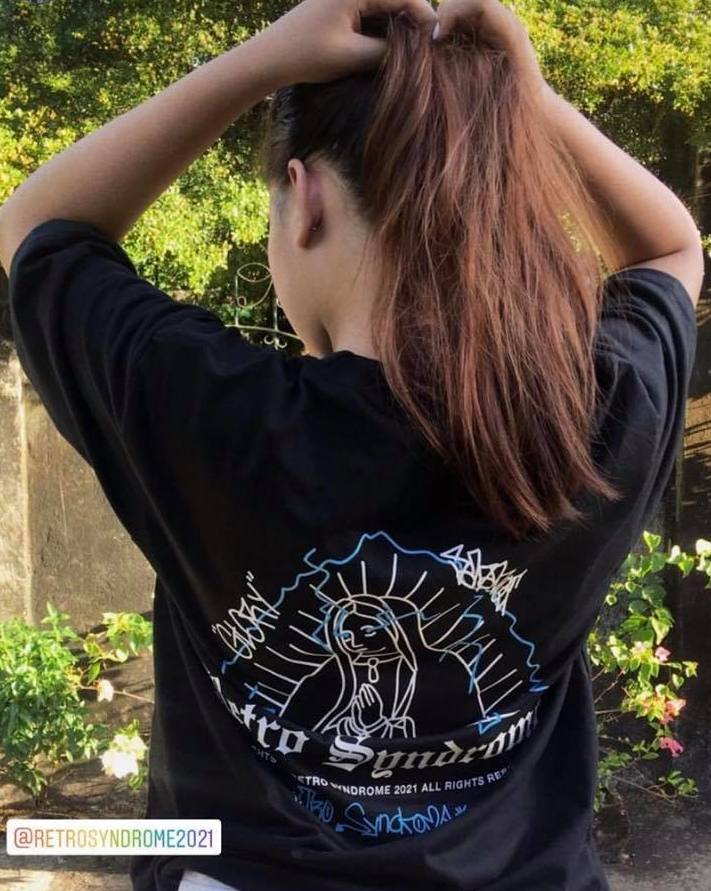

The future is now

Our products conveys simplicity of style, direct
and authentic,
inspired by energy, positivity and motion.
Colour is in the DNA
of Retro Syndrome, energising and
euphoric hues are combined
to perfection, giving light to a
vibrant and dynamic product.

